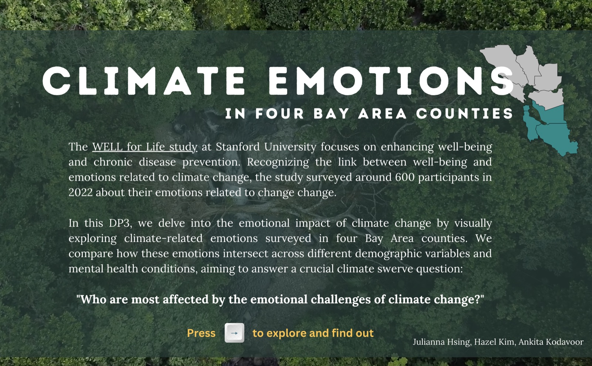
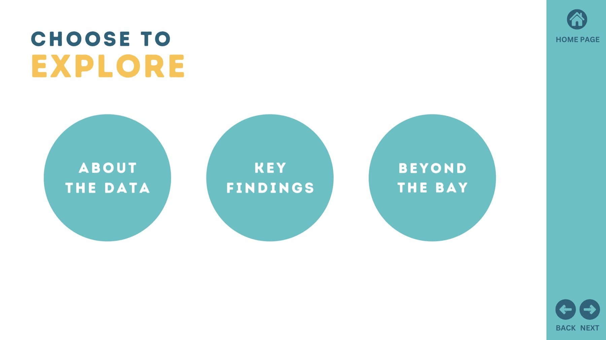
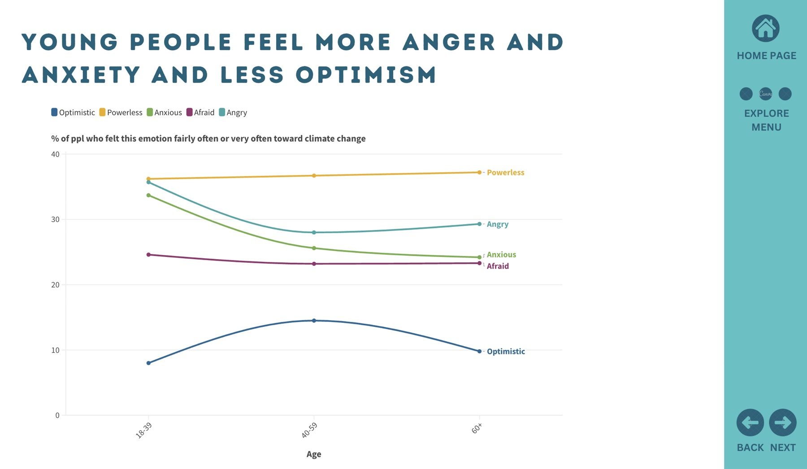
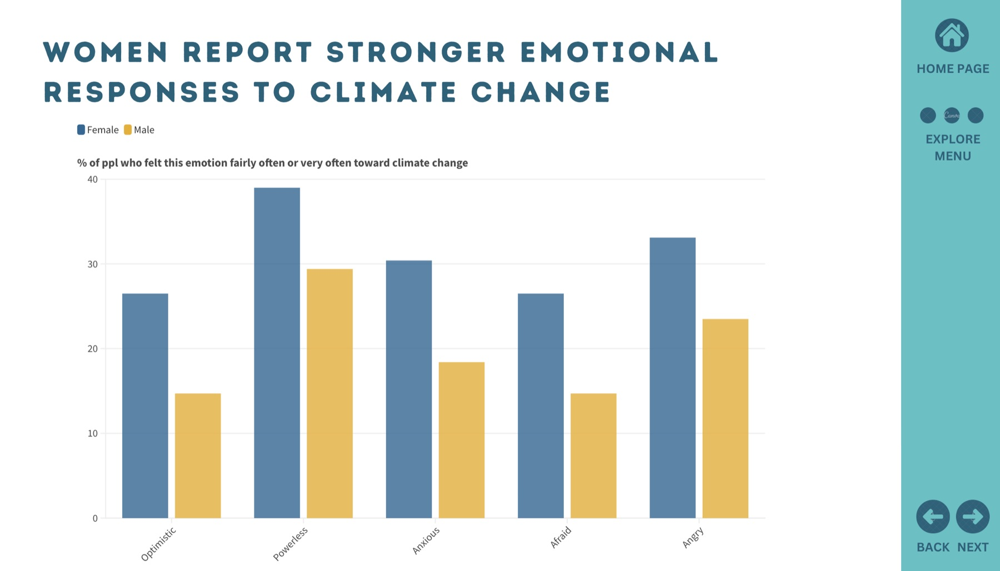
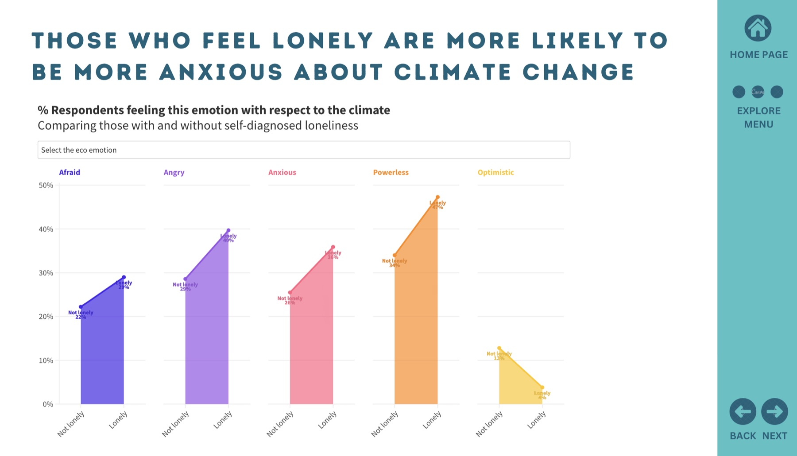
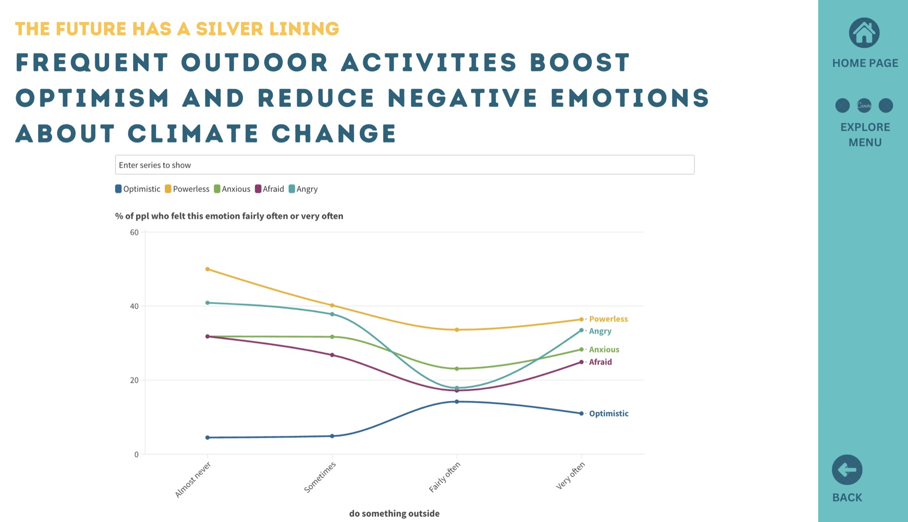

climate emotions
an interactive data dashboard of emotions related to climate change
background
This project explores the emotional impact of climate change through interactive data visualizations, based on survey responses from around 600 participants in Stanford WELL for Life. Participants were asked about their climate-related emotions across four Bay Area counties: San Mateo, Santa Clara, San Francisco, and Alameda. Recognizing that emotions are deeply linked to well-being, the study also examines how these emotions intersect with demographic factors and mental health conditions. Key questions include:
- who experiences the strongest emotional responses to climate change?
- how do climate emotions vary across age, gender, and other demographic variables?
- how do climate emotions interact with mental health conditions, such as depression or loneliness?
project goals
- to analyze climate-related emotional data.
- to gain hands-on experience with interactive data visualization tools.
- to create a dashboard that allows users to explore findings dynamically.
Data were used with permission from the Principal Investigator of the Stanford WELL for Life Study.
the emotions we measured
Fourteen climate-related emotions, illustrated for the dashboard so respondents and readers could recognize a feeling before reading its label.
about the dashboard
landing page: we created a landing page introducing the project and providing context so users can orient themselves before interacting with the dashboard. Here you’ll find background on the study, the dataset, and the questions guiding the research.

navigation page: after the landing page you reach the navigation page, which offers three main ways to explore the data:
- about the data — descriptive statistics on the sample, including demographics, mental health measures, and reported climate emotions.
- key findings — patterns in climate emotions across demographics and mental health conditions.
- beyond the bay — how the Bay Area findings compare to global datasets.
This structure lets you start broad and gradually explore more detailed insights. A navigation bar on the right lets you return home or move between pages.

key findings




notes
This project was completed for DESIGN 255: The Design of Data. It is by no means a comprehensive examination of the emotional impact of climate change; it explores only a small slice of the topic. All analyses are bivariate, and no multivariate regressions were conducted to assess associations. Please interpret these findings with caution, and remember that correlation does not imply causation. Suggestions for improving the analyses are welcome.
interested in the data and methods? (click to expand)
Descriptive analyses were conducted in R, and data visualizations were made using Flourish.
data and information sources
- Stanford WELL for Life (US data)
- Hickman, C., et al. (2021). Climate anxiety in children and young people and their beliefs about government responses to climate change: a global survey. The Lancet Planetary Health
- A Guide to Climate Emotions by the Climate Mental Health Network
measures
climate emotions — depending on the use case, responses for each climate emotion were categorized as:
- Original: (1) Never, (2) Almost Never, (3) Sometimes, (4) Fairly Often, (5) Very Often
- Method A: (1) Never or Almost Never, (2) Sometimes, (3) Fairly Often or Very Often
- Method B: (1) Yes (Sometimes / Fairly Often / Very Often), (2) No (Almost Never or Never)
clinical depression — “Have you ever been told by a doctor or other health professional that you had or have depression?” (1) Yes, (0) No, (2) Don’t know
UCLA Loneliness Scale — “During the last two weeks, how often did you feel…”
- …that you lacked companionship?
- …left out?
- …isolated from others?
Scoring: sum all three items; 3–5 = not lonely, 6–9 = lonely.
exposure to nature — “How often did you do something outside for a period of time lasting more than 10 minutes?” (1) Never, (2) Almost Never, (3) Sometimes, (4) Fairly Often, (5) Very Often